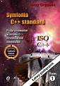
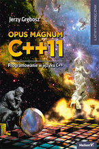
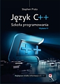
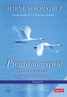

Literatura




Programowanie. Teoria i praktyka z wykorzystaniem C++. Wydanie III - Bjarne Stroustrup
Język C++. Szkoła programowania. Wydanie VI - Stephen Prata
Opus magnum C++11 - Jerzy Grębosz
Symfonia C ++ Standard - Jerzy Grębosz